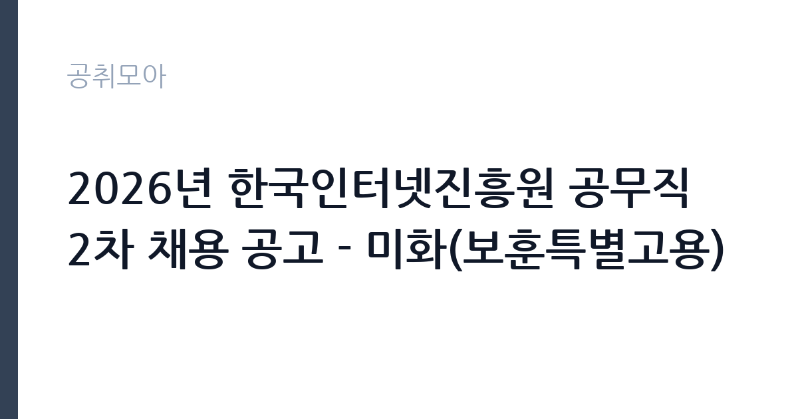

[공공기관] 2026년 한국인터넷진흥원 공무직 2차 채용 공고 - 미화(보훈특별고용)
한국인터넷진흥원 · 전남광주 · 마감 2026-10-06 (D-15) · 출처 잡알리오

한눈에 보는 모집 조건
| 기관 | 한국인터넷진흥원 |
|---|---|
| 공고명 | 2026년 한국인터넷진흥원 공무직 2차 채용 공고 - 미화(보훈특별고용) |
| 고용형태 | 공무직 |
| 근무지 | 전남광주 |
| 게시일 | 2026-09-22 |
| 마감일 | 2026-10-06 (D-15) |
지원자격, 이렇게 읽으세요
- 공공기관 채용공시
- 세부 조건은 원문 공고문 확인
보훈특별고용 추천이 서류전형 이전의 선행 조건이다. 보훈부 추천 없이는 원서 자체가 성립하지 않으므로, 추천 절차를 밟고 있는 수험생은 추천 일정과 접수 마감을 반드시 맞춰야 한다. 나머지 결격사유(부패방지법 해당, 진흥원 인사규정 결격, 병역의무 불이행)도 확인해야 한다. 미화 분야의 정년은 만 65세로 명시되어 있어, 입사 예정일 기준 정년 도달자는 지원이 불가하다.
이 공고의 포인트
특별고용 전형은 경쟁 구도가 일반 공채와 다르다. 보훈부 추천자 풀 안에서만 경쟁하므로, 추천을 확보한 상태라면 합격 가능성이 현실적으로 열려 있다. KISA는 나주 본원과 서울 분원을 둔 정보보호 전문 공공기관으로, 공무직도 기관 소속의 안정적 고용이 보장되는 구조다. 미화 분야 정년이 만 65세로 일반 정년보다 길다는 점도 이 공고만의 이점이다.
전형은 어떻게 진행되나
전형은 서류전형과 면접전형으로 진행되는 것이 일반적이다. 서류에서는 보훈 추천 여부와 결격사유를 확인하고, 면접에서는 근무 의지와 건강 상태, 조직 적응력을 평가한다. 미화 직무 특성상 실기 평가가 포함될 수도 있으므로, 원문 공고문의 전형 절차를 확인해야 한다. 제출 서류와 접수처(채용 홈페이지)는 원문에서 확정해야 한다.
원문에서 확인한 전형 방식
º 연령, 학력, 성별 제한 없음 - 단, 입사예정일 기준 KISA 정년(만 60세, 미화분야의 경우 만 65세)에 도달한 자 지원 불가 º 입사예정일부터 KISA 소속으로 전일 근무 가능한 자 º 「부패방지 및 국민권익위원회의 설치와 운영에 관한 법률」 제82조에 해당되지 않는 자 º 한국인터넷진흥원 인사규정 제7조(결격사유)에 해당하지 않는 자([붙임]) º 병역법 제76조에서 정한 병역의무 불이행 사실이 없는 자 º 국가보훈부를 통해 특별고용 추천을 받은 자
이런 분께 추천해요
- 국가보훈부의 특별고용 추천을 받았거나 추천 절차를 진행 중인 사람
- 정년까지 안정적으로 근무할 수 있는 공공기관 일자리를 찾는 사람
- 나주·광주 등 전남권 거주로 출퇴근이 가능한 사람
지원 전 체크리스트
- 보훈부 특별고용 추천 상태를 확인하고 추천서 발급 일정을 점검한다
- 입사 예정일 기준 미화 분야 정년(만 65세)에 도달하지 않는지 본다
- 입사 예정일부터 전일 근무가 가능한 상태인지 확인한다
- 접수 마감일(10월 6일)과 접수 방법(온라인 접수처)을 원문에서 확인한다
모집 일정과 제출 타이밍
접수는 2026년 10월 6일에 마감된다. 이후 서류와 면접을 거쳐 하반기 중에 입사하는 흐름이 일반적이다. 보훈특별고용은 추천과 채용 절차가 맞물려 돌아가므로, 보훈부와 진흥원 양쪽의 일정을 함께 챙겨야 한다. 정확한 전형 일정과 입사 예정일은 원문 공고문에서 확인해야 한다.
직무 이해하기: 공공기관
미화 공무직의 업무는 청사 위생과 환경 관리다. 사무실과 화장실, 공용공간의 청소와 쓰레기 분리배출 관리, 소모품 보충이 일상 업무다. KISA 나주 본원은 규모가 큰 청사이므로 구역별 담당 체제로 움직인다. 단순해 보이지만 청사 이미지를 좌우하는 업무이며, 보안 시설이라는 특성상 출입 통제와 보안 수칙 준수가 함께 요구된다.
자기소개서 작성 팁
지원 서류에서는 성실함과 장기근무 의지를 앞세워야 한다. 이전 직장에서 결근 없이 근무한 기록이나 맡은 구역을 꾸준히 관리한 경험을 구체적으로 쓰는 것이 좋다. 보훈특별고용 전형이므로 본인의 상황을 솔직하게 밝히되, 직무 수행 능력과 건강 상태를 중심으로 서술해야 한다. 분량이 짧더라도 오탈자 없이 정돈된 문서를 내는 것이 기본이다.
면접 준비 포인트
면접에서는 근무 의지와 체력, 협업 태도를 본다. 이른 출근과 분담 구역 근무에 문제없는지, 동료와 갈등이 생기면 어떻게 할 것인지 묻는다. 보안 시설 근무라는 점을 언급하며 보안 수칙을 지키겠다는 태도를 보이면 좋다. 과장된 각오보다 담담하고 꾸준한 인상을 주는 것이 합격에 가깝다.
급여·근무조건 읽는 법
정확한 보수액은 원문 공고문의 보수 항목에서 확인해야 한다. KISA 공무직 보수는 진흥원 규정에 따르며 4대보험에 가입되는 구조가 일반적이다. 참고로 진흥원 일반직·일반계약직 공고에는 4대보험과 복지카드, 건강검진 같은 복리후생이 명시되어 있으나, 공무직 적용 범위는 이번 공고문에서 확인해야 한다. 경쟁률과 합격선은 공개되지 않으므로 원문에서 확인해야 한다.
자주 묻는 질문
- 보훈특별고용 추천은 어떻게 받나요?
국가보훈부를 통한 추천이 선행되어야 하며, 보훈관서나 보훈부 취업 지원 제도를 통해 진행된다. 추천 일정이 접수 마감과 맞물리는지 미리 확인해야 한다. - 미화 분야 정년이 긴가요?
공고문에 미화 분야 정년 만 65세라고 명시되어 있어 일반 정년(만 60세)보다 길다. 정년 도달자는 지원이 불가하다. - 근무지는 어디인가요?
KISA는 나주 본원과 서울 분원을 운영한다. 이번 미화 채용의 근무지는 원문 공고문에서 확인해야 한다.
함께 보면 좋은 공고
[공공기관] 한국토지주택공사 개방형 직위(감사실장, 준법감시관) 공모 — 마감 2026-10-07[공공기관] 한국도로공사 비상임이사 공모 — 마감 2026-09-29[공공기관] 2026년 하반기 2차 중소벤처기업진흥공단 체험형 청년인턴(장애인) 채용 공고 — 마감 2026-10-12출처: 잡알리오 공개정보를 바탕으로 공취모아가 정리한 안내글입니다. 모집 조건·일정은 변경될 수 있으니 지원 전 반드시 원문 공고문을 확인하세요. 본 글은 정보 제공용이며 합격을 보장하지 않습니다.